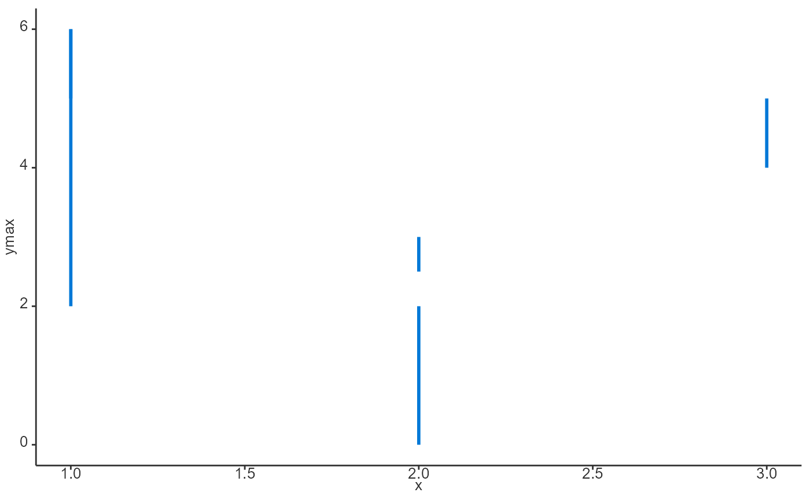
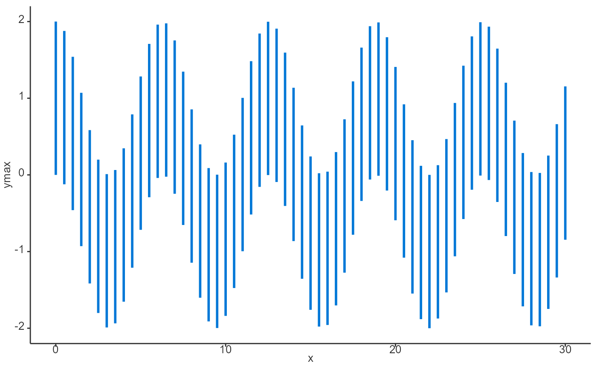
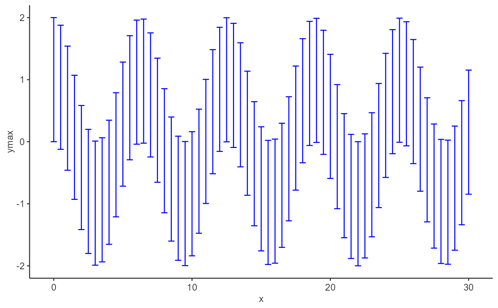
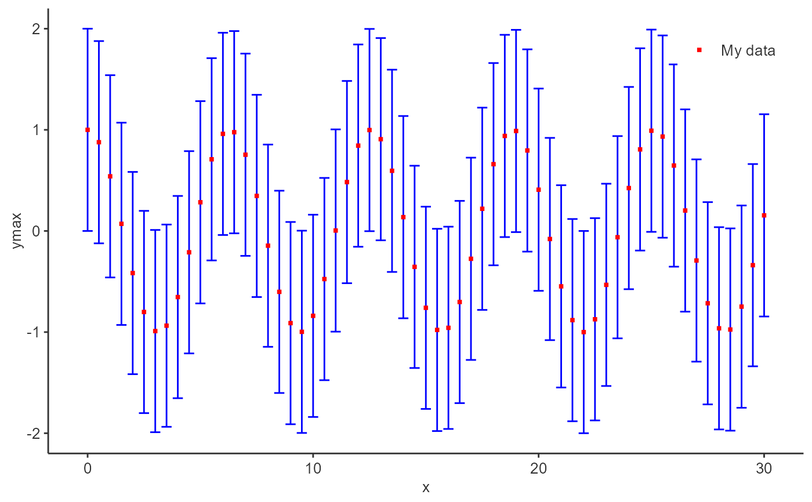

Add an errorbar layer to a ggplot object.
addErrorbar( data = NULL, metaData = NULL, x = NULL, ymin = NULL, ymax = NULL, caption = NULL, color = NULL, size = NULL, linetype = NULL, includeCap = FALSE, dataMapping = NULL, plotConfiguration = NULL, plotObject = NULL )
Arguments
| data | A data.frame to use for plot. |
|---|---|
| metaData | A named list of information about |
| x | Numeric values to plot along the |
| ymin | Numeric values to plot along the |
| ymax | Numeric values to plot along the |
| caption | Optional character values defining the legend captions of the plot. |
| color | Optional character values defining the colors of the plot layer.
See |
| size | Optional numeric values defining the size of the plot layer. |
| linetype | Optional character values defining the linetype of the plot layer.
See enum |
| includeCap | Logical defining if errorbars include caps at their ends. |
| dataMapping | A |
| plotConfiguration | An optional |
| plotObject | An optional |
Value
A ggplot object
References
For examples, see: https://www.open-systems-pharmacology.org/TLF-Library/articles/atom-plots.html
See also
Other atom plots:
addLine(),
addRibbon(),
addScatter(),
initializePlot()
Examples
# Add errorbar using x, ymin and ymax addErrorbar( x = c(1, 2, 1, 2, 3), ymin = c(5, 0, 2, 3, 4), ymax = c(6, 2, 6, 2.5, 5) )  # Add errorbar using a data.frame time <- seq(0, 30, 0.5) errorbarData <- data.frame(x = time, ymin = cos(time) - 1, ymax = cos(time) + 1) addErrorbar( data = errorbarData, dataMapping = RangeDataMapping$new(x = "x", ymin = "ymin", ymax = "ymax") )  # Or for simple cases a smart mapping will get directly x, ymin and ymax from data addErrorbar(data = errorbarData)# Add a errorbar with caption addErrorbar(data = errorbarData, caption = "My errorbar plot")
# Add a errorbar with specific properties addErrorbar(data = errorbarData, color = "blue", size = 0.5, includeCap = TRUE, caption = "My data")  # Add a errorbar with specific properties p <- addErrorbar( data = errorbarData, color = "blue", size = 0.5, includeCap = TRUE, caption = "My data" ) addScatter( x = time, y = cos(time), color = "red", size = 1, caption = "My data", plotObject = p ) 